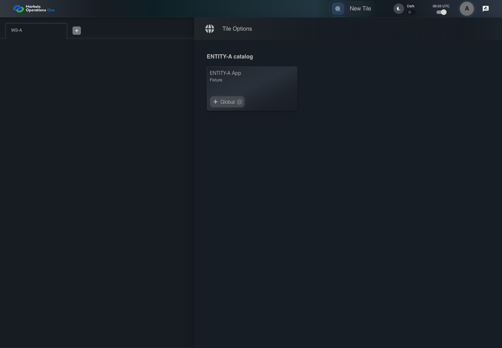

AUTH-137 empty new login removes old catalog
FAIL · application/run-050/auth-137-empty-new-login-removes-old-catalog-bfea4de8a187-attempt-1 · ACTUAL_APPLICATION_LOCAL_SERVICES
Actual MFE; controlled identity, catalog, API responses and browser time. Signed current-BFF validation is used only where declared. Synthetic credentials and user aliases; no real identity provider acceptance.
2026-10-22T06:03:54.467Z to 2026-10-22T06:03:56.434Z
Assertions and result · Artifact manifest · Exact run inputs and source hashes
Result SHA-256:4c644c56a06a47d86aec924d7616559f28885a9a69c88733e8cdd9a5f9834344Retained failure details
[
{
"message": "Error: \u001b[2mexpect(\u001b[22m\u001b[31mreceived\u001b[39m\u001b[2m).\u001b[22mnot\u001b[2m.\u001b[22mtoContain\u001b[2m(\u001b[22m\u001b[32mexpected\u001b[39m\u001b[2m) // indexOf\u001b[22m\n\nExpected substring: not \u001b[32m\"ENTITY-A App\"\u001b[39m\nReceived string: \u001b[31m\"{\\\"user\\\":{\\\"sub\\\":\\\"user-a\\\",\\\"fullName\\\":\\\"user-a\\\",\\\"entities\\\":[],\\\"id\\\":\\\"user-a\\\",\\\"name\\\":\\\"user-a\\\",\\\"userId\\\":\\\"user-a\\\"},\\\"token\\\":\\\"Bearer eyJhbGciOiJub25lIiwidHlwIjoiSldUIn0.eyJzdWIiOiJ1c2VyLWEiLCJpYXQiOjE4OTM0NTU5NDAsImV4cCI6MTg5MzQ1NzIwMCwiZml4dHVyZSI6Im5ldyJ9.fixture\\\",\\\"isLoading\\\":false,\\\"theme\\\":\\\"dark\\\",\\\"isOpenFin\\\":false,\\\"expiredIn\\\":1893457200,\\\"userLoginTime\\\":\\\"2026-10-22T06:03:55.751Z\\\",\\\"iat\\\":1893455940,\\\"workspaces\\\":[{\\\"id\\\":\\\"WS-A\\\",\\\"label\\\":\\\"WS-A\\\",\\\"isActive\\\":true,\\\"containers\\\":[]}],\\\"currentWorkspace\\\":{\\\"id\\\":\\\"WS-A\\\",\\\"label\\\":\\\"WS-A\\\",\\\"isActive\\\":true,\\\"containers\\\":[]},\\\"drawer\\\":true,\\\"timeType\\\":\\\"utc\\\",\\\"entities\\\":[],\\\"refreshTab\\\":{},\\\"sseCallback\\\":{},\\\"ssePayload\\\":[],\\\"isOnLogout\\\":false,\\\"drawers\\\":[{\\\"id\\\":1,\\\"label\\\":\\\"ENTITY-A catalog\\\",\\\"tiles\\\":[{\\\"title\\\":\\\"\u001b[7mENTITY-A App\u001b[27m\\\",\\\"subtitle\\\":\\\"Fixture\\\",\\\"entryName\\\":\\\"Global\\\",\\\"imageDarkTheme\\\":\\\"\\\",\\\"imageLightTheme\\\":\\\"\\\",\\\"emailSupport\\\":\\\"support@example.test\\\",\\\"container\\\":\\\"@fm/unused\\\",\\\"module\\\":\\\"/unused\\\",\\\"tile\\\":\\\"/unused\\\",\\\"entity\\\":[\\\"ENTITY-A\\\"],\\\"subject\\\":\\\"\\\",\\\"isTemplate\\\":true}]}],\\\"rootVersion\\\":\\\"PACKAGE_VERSION\\\"}\"\u001b[39m",
"stack": "Error: \u001b[2mexpect(\u001b[22m\u001b[31mreceived\u001b[39m\u001b[2m).\u001b[22mnot\u001b[2m.\u001b[22mtoContain\u001b[2m(\u001b[22m\u001b[32mexpected\u001b[39m\u001b[2m) // indexOf\u001b[22m\n\nExpected substring: not \u001b[32m\"ENTITY-A App\"\u001b[39m\nReceived string: \u001b[31m\"{\\\"user\\\":{\\\"sub\\\":\\\"user-a\\\",\\\"fullName\\\":\\\"user-a\\\",\\\"entities\\\":[],\\\"id\\\":\\\"user-a\\\",\\\"name\\\":\\\"user-a\\\",\\\"userId\\\":\\\"user-a\\\"},\\\"token\\\":\\\"Bearer eyJhbGciOiJub25lIiwidHlwIjoiSldUIn0.eyJzdWIiOiJ1c2VyLWEiLCJpYXQiOjE4OTM0NTU5NDAsImV4cCI6MTg5MzQ1NzIwMCwiZml4dHVyZSI6Im5ldyJ9.fixture\\\",\\\"isLoading\\\":false,\\\"theme\\\":\\\"dark\\\",\\\"isOpenFin\\\":false,\\\"expiredIn\\\":1893457200,\\\"userLoginTime\\\":\\\"2026-10-22T06:03:55.751Z\\\",\\\"iat\\\":1893455940,\\\"workspaces\\\":[{\\\"id\\\":\\\"WS-A\\\",\\\"label\\\":\\\"WS-A\\\",\\\"isActive\\\":true,\\\"containers\\\":[]}],\\\"currentWorkspace\\\":{\\\"id\\\":\\\"WS-A\\\",\\\"label\\\":\\\"WS-A\\\",\\\"isActive\\\":true,\\\"containers\\\":[]},\\\"drawer\\\":true,\\\"timeType\\\":\\\"utc\\\",\\\"entities\\\":[],\\\"refreshTab\\\":{},\\\"sseCallback\\\":{},\\\"ssePayload\\\":[],\\\"isOnLogout\\\":false,\\\"drawers\\\":[{\\\"id\\\":1,\\\"label\\\":\\\"ENTITY-A catalog\\\",\\\"tiles\\\":[{\\\"title\\\":\\\"\u001b[7mENTITY-A App\u001b[27m\\\",\\\"subtitle\\\":\\\"Fixture\\\",\\\"entryName\\\":\\\"Global\\\",\\\"imageDarkTheme\\\":\\\"\\\",\\\"imageLightTheme\\\":\\\"\\\",\\\"emailSupport\\\":\\\"support@example.test\\\",\\\"container\\\":\\\"@fm/unused\\\",\\\"module\\\":\\\"/unused\\\",\\\"tile\\\":\\\"/unused\\\",\\\"entity\\\":[\\\"ENTITY-A\\\"],\\\"subject\\\":\\\"\\\",\\\"isTemplate\\\":true}]}],\\\"rootVersion\\\":\\\"PACKAGE_VERSION\\\"}\"\u001b[39m\n at /Users/lushevol/code/github/ratan-release-impact/workbench/e2e/audit-specs/auth-final.spec.ts:73:180\n at AuditCapture.step (/Users/lushevol/code/github/ratan-release-impact/workbench/e2e/support/audit-fixture.ts:94:21)\n at /Users/lushevol/code/github/ratan-release-impact/workbench/e2e/audit-specs/auth-final.spec.ts:66:26",
"location": {
"file": "/Users/lushevol/code/github/ratan-release-impact/workbench/e2e/audit-specs/auth-final.spec.ts",
"column": 180,
"line": 73
},
"snippet": " 71 | if(step.number===5){await login.clickSignInButton();return;}\n 72 | if(step.number===6){await page.getByText('New Tile',{exact:true}).click({force:true});await expect(page.getByText('ENTITY-A App',{exact:true})).toHaveCount(0);return;}\n> 73 | if(step.number===7){expect(await page.evaluate(async()=>JSON.stringify((await(window as unknown as SystemWindow).System.import('@fm/base')).Hooks.getHooks().store as any))).not.toContain('ENTITY-A App');return;}\n | ^\n 74 | });\n 75 | });\n 76 | test('AUTH-144 forged entitlement is rejected by current server',async({page,audit})=>{"
}
]Screenshot capture: CAPTURED. Named frames: 8.
Step screenshot bindings: COMPLETE. 7/7 canonical steps have execution screenshots.
Bindings measure structural coverage only. They do not establish screenshot content quality or relevance.
Screenshot content review: NOT_REVIEWED. Recorded context: 0/8 frames. Identical image bytes: 3 repeated frames. Recorded context does not establish human visual review.
Canonical step timeline
Given User A is an entitled fixture user in an isolated browser context with empty browser storage
Execution: PASSED.
1. step-01 Visible state after step 1: Given User A is an entitled fixture user in an isolated browser context with empty browser storage
2026-10-22T06:03:55.264Z · 1440×1000
Step: /Users/lushevol/code/github/ratan-release-impact/workbench/tasks/ui-test-coverage-20261022/test-cases.md:5123
SHA-256:99567bb3808af958792a6b38879d848938c08b417fb7dfff75bde75fcbd51a3aAnd the LOCAL login page is visible; user-a previously had ENTITY-A; the next accepted login returns no entities and no drawers
Execution: PASSED.
2. step-02 Visible state after step 2: And the LOCAL login page is visible; user-a previously had ENTITY-A; the next accepted login returns no entities and no drawers
2026-10-22T06:03:55.389Z · 1440×1000
Step: /Users/lushevol/code/github/ratan-release-impact/workbench/tasks/ui-test-coverage-20261022/test-cases.md:5124
SHA-256:99567bb3808af958792a6b38879d848938c08b417fb7dfff75bde75fcbd51a3aImage bytes match frame 1. An unchanged image can be valid for consecutive assertions. This match does not establish correct step content.
When User A enters "user-a" into the textbox with placeholder "Enter Username" on the login page
Execution: PASSED.
3. step-03 Visible state after step 3: When User A enters "user-a" into the textbox with placeholder "Enter Username" on the login page
2026-10-22T06:03:55.551Z · 1440×1000
Step: /Users/lushevol/code/github/ratan-release-impact/workbench/tasks/ui-test-coverage-20261022/test-cases.md:5125
SHA-256:82a7f18638e1f44d126e343c9ea12807da2d0520a0a2cc85db3f86597ccd4fc4And User A enters "FixturePass1!" into the text input with placeholder "Enter Password" on the login page
Execution: PASSED.
4. step-04 Visible state after step 4: And User A enters "FixturePass1!" into the text input with placeholder "Enter Password" on the login page
2026-10-22T06:03:55.701Z · 1440×1000
Step: /Users/lushevol/code/github/ratan-release-impact/workbench/tasks/ui-test-coverage-20261022/test-cases.md:5126
SHA-256:a95c65ca56c073467578ce17791e68d1a172bbb8fca78688af2ee4dba65b174fAnd User A clicks the button labelled "Sign In" on the login page
Execution: PASSED.
5. step-05 Visible state after step 5: And User A clicks the button labelled "Sign In" on the login page
2026-10-22T06:03:55.884Z · 1440×1000
Step: /Users/lushevol/code/github/ratan-release-impact/workbench/tasks/ui-test-coverage-20261022/test-cases.md:5127
SHA-256:834edf00a4e74948d02ebe5360efe703449a572b5fda342849556a7ab9e5b495Then previous ENTITY-A application controls are absent from the portal; their component types and exact identities are UNVERIFIED
Execution: PASSED.
6. step-06 Visible state after step 6: Then previous ENTITY-A application controls are absent from the portal; their component types and exact identities are UNVERIFIED
2026-10-22T06:03:55.975Z · 1440×1000
Step: /Users/lushevol/code/github/ratan-release-impact/workbench/tasks/ui-test-coverage-20261022/test-cases.md:5128
SHA-256:bcac5b02e4b7c1dfd8786346ad14f1dcf54b395f64171f22527dc7e587b1e888And the effective portal catalog contains no application retained solely from the prior ENTITY-A state
Execution: FAILED.
7. step-07-failure Visible state when step 7 failed. Later steps did not execute.
2026-10-22T06:03:56.020Z · 1440×1000
Step: /Users/lushevol/code/github/ratan-release-impact/workbench/tasks/ui-test-coverage-20261022/test-cases.md:5129
SHA-256:bcac5b02e4b7c1dfd8786346ad14f1dcf54b395f64171f22527dc7e587b1e888Image bytes match frame 6. An unchanged image can be valid for consecutive assertions. This match does not establish correct step content.
Additional named frames

The visible state when the test failed.
2026-10-22T06:03:56.123Z · 1440×1000Step: Test source: /Users/lushevol/code/github/ratan-release-impact/workbench/e2e/audit-specs/auth-final.spec.ts:64
SHA-256:
bcac5b02e4b7c1dfd8786346ad14f1dcf54b395f64171f22527dc7e587b1e888Image bytes match frame 7. An unchanged image can be valid for consecutive assertions. This match does not establish correct step content.
Screenshots establish visible state only. Assertions and traces support functional claims.